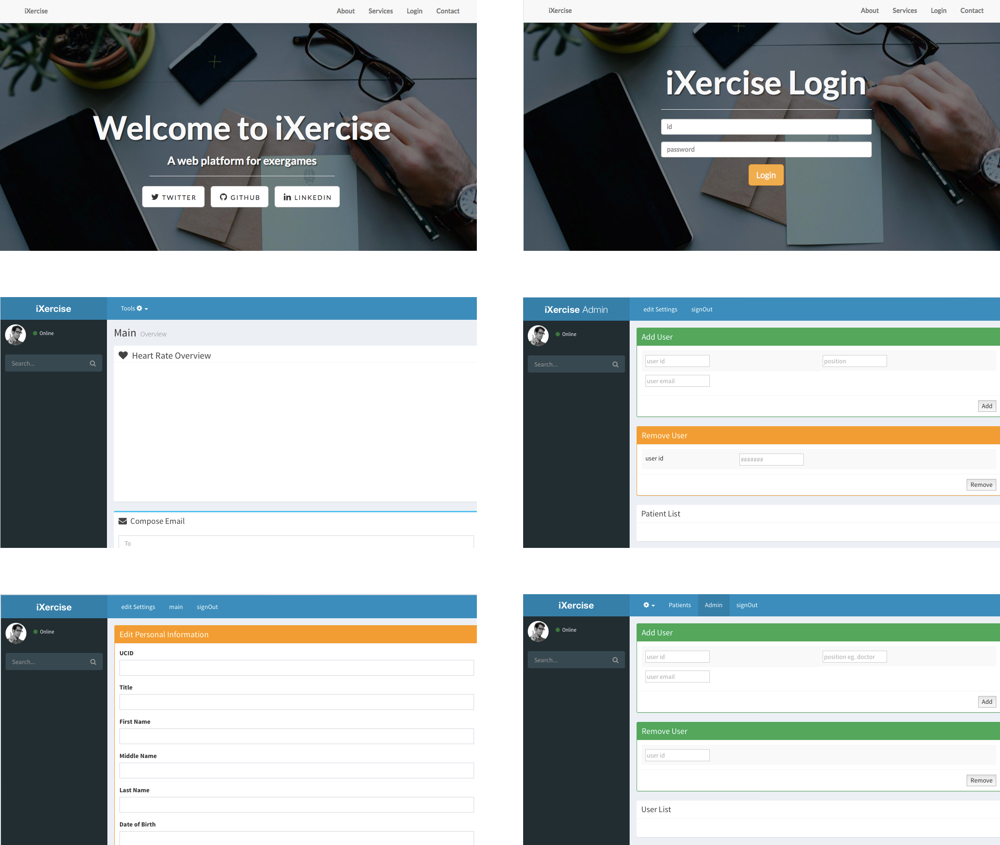
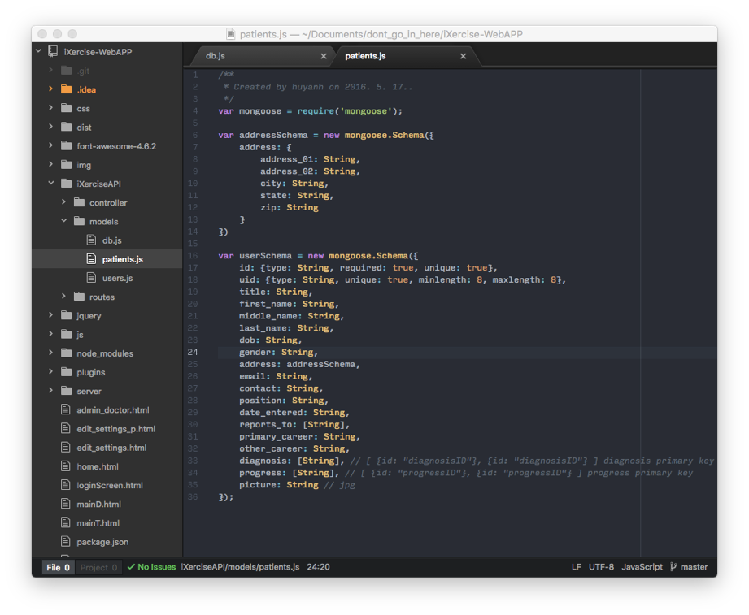

UCI
MongoDB, Node.js, D3, RabbitMQ
March 2016 - June 2016
This was my project for my Project in Human Computer Interaction class at UC Irvine. Working with the UCI Graduate Program in Network Systems, we were asked to build a user facing web application that takes in data from exercise bike machines and displays it in a meaningful way to doctors and trainers who are treating patients recovering from leukemia.
Based on the what the client wanted the web application to do, we created rough flow sketches of how the pages would go from flow depending on which user has logged in to the application. The main functions that we focused on were adding patients, removing patients, and viewing patient statistics in the system.
Along with my team, I conducted interviews and figured out what to build, then tested the wireframes with the stakeholders. The sketches that we tested with the client were validated, so we turned that into an HTML Bootstrap prototype.
The next step was testing it with the actual users. The client was only an intermediary, so we needed to go to doctors and trainers to see if the website was usable. A major hurdle, however, was the time constraints of the doctors and the scope of the class.
For each type of user, we created a list of tasks to perform on the static website. We asked doctors to add and remove a patient from the system, and asked trainers to view patient information. After the users would finish each task assigned to them, they would answer a survey asking them how difficult it was to perform each task.
We used Google forms to create the surveys and emailed the links to our user representative, who then emailed the doctors and trainers all of the materials. The survey consisted of mainly closed questions but had two open questions. Because we were not able to directly interview the customers, the closed ended questions were better to get responses and were able to be analyzed directly in Google forms.
Once we learned the exact details of a successful product we built the application. The client wanted us to use MongoDB for the database and Java for the backend, but we decided that Node.js would be a better fit because of existing APIs. We created a server that would run the HTML pages and manage web socket messages to the web client. To connect with the exercise bikes, we used the RabbitMQ message broker to send statistics such as heart rate, mileage, and calories burned to the MongoDB database.
I was in charge of writing to the database and making sure the data incoming from the server were integrity checked in MongoDB using Mongoose. It is important that when a doctor or trainer enters data on the main interface, badly formatted data will be rejected. We successfully finished the application within 5 weeks.
Without direct contact with the users, it is difficult to do any sort of research that involves usability testing. Since the time frame was small for a class project, we had to make a lot of assumptions. Also, have an intermediary slows down the process by a lot because of the back and forth communication. In the end, however, we learned a lot about how to conduct user research and about the pitfalls of certain methods.